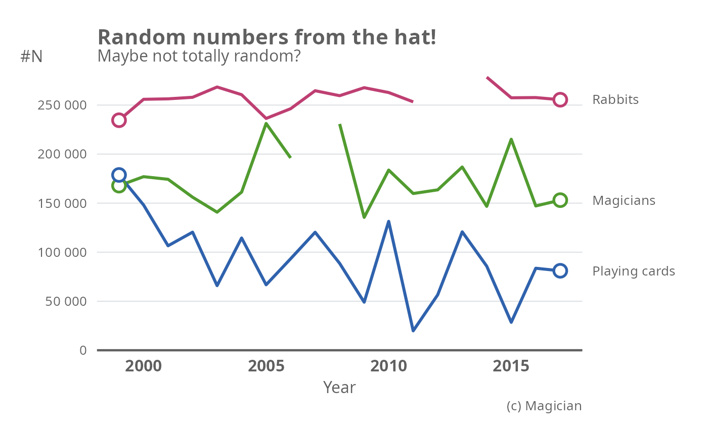

plot_line_thl.RdMake a line plot
plot_line_thl( data, xvar, yvar, groupvar = NULL, linewidth = 3, colors = palette_thl("line"), lang = "fi", plot.missing = FALSE, linetype.missing = 2, marked.treshold = 10, breaks.x = waiver(), breaks.y = waiver_thl(), y.limits = c(0, NA), panels = FALSE, nrow.panels = 1, labels.end = FALSE )
| data | a data frame |
|---|---|
| xvar | variable to be plotted on the x-axis. |
| yvar | variable to be plotted on the y-axis. |
| groupvar | grouping variable. Defaults to NULL (no grouping). |
| linewidth | width of the line in PostScript points, defaults to 3. |
| colors | Colors to be used.
Defaults to THL qualitative color palette for line plots.
(see |
| lang | language options for the y-axis labels.
Defines the style of big marks and decimal marks
(see |
| plot.missing | TRUE/FALSE, should the missing values be linearly
interpolated and plotted with dotted line.
(see |
| linetype.missing | linetype for missing observations |
| marked.treshold | The maximum amount of data points plotted. A dot (default 10). If the number of data points is greater than this treshold, dots are plotted only at the beginning and the end of the line. Setting this to NULL will omit all dots. |
| breaks.x | A character vector defining the x-axis breaks. |
| breaks.y | A character vector defining the y-axis breaks. |
| y.limits | limits for the y-axis |
| panels | Should multiple graphs be plotted in separate panels?
If TRUE, the panels are based on the grouping variable defined
by the |
| nrow.panels | In how many rows should the panels be plotted? |
| labels.end | Whether the line labels should be displayed at the right end of each line instead of legend. |
A ggplot -object.
year <- 1999:2017 set.seed(1234) value1 <- jitter(c(250:(250+length(year)-1)), factor = 100)*1000 value2 <- jitter(c(200:(200-length(year)+1)), factor = 300)*1000 value3 <- jitter(c(100:(100-length(year)+1)), factor = 400)*1000 dat <- data.frame(year = rep(year,3), value = c(value1, value2, value3), group = factor(rep(c("Rabbits", "Magicians", "Playing cards"), each = length(year)))) dat$value <- with(dat, ifelse(year %in% c(2012,2013) & group == "Rabbits", NA, value)) dat$value <- with(dat, ifelse(year == 2007 & group == "Magicians", NA, value)) plot_line_thl(data = dat, xvar = "year", yvar = "value", groupvar = "group")plot_line_thl(data = dat, xvar = "year", yvar = "value", groupvar = "group", plot.missing = TRUE)plot_line_thl(data = dat, xvar = "year", yvar = "value", groupvar = "group", labels.end = TRUE) + labs(title = "Random numbers from the hat!", caption = "(c) Magician", subtitle = "Maybe not totally random?", y = "#N", x = "Year")